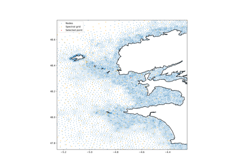
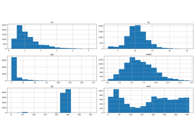
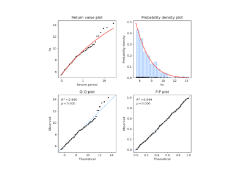
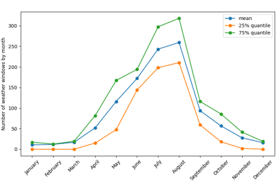
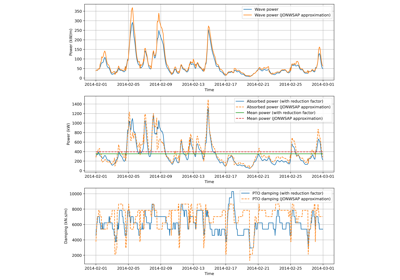

Gallery of use-cases#
Below is a gallery of examples of use-cases of the toolbox.

Visualize the database configuration: nodes, bathymetry…
Visualize the database configuration: nodes, bathymetry...

Extract some time-series from the database and analysis
Extract some time-series from the database and analysis

Modelling multivariate extremes
Modelling multivariate extremes

Use-case example of the Operational Planning module
Use-case example of the Operational Planning module

Estimation of producible energy
Estimation of producible energy